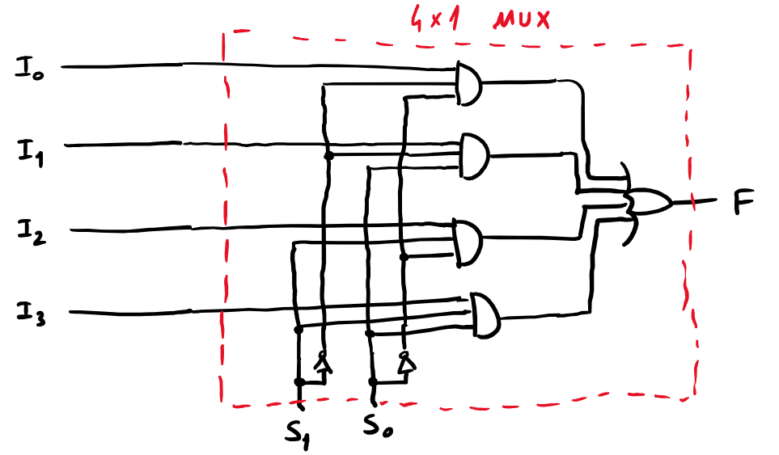
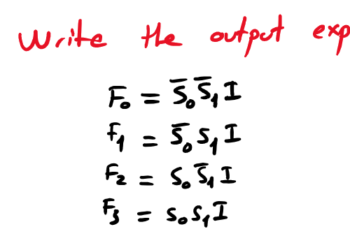
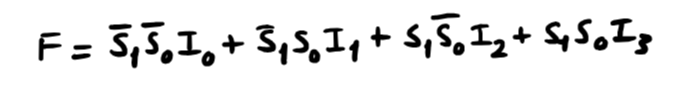

1Kombinasyonel devre nedir?
Çıkışı sadece o anki girişlere bağlı olan devre. Hafızası yoktur: aynı girişi verirsen her zaman aynı çıkışı alırsın.
Şimdiye kadar tasarladığımız her devre (alarm, toplayıcılar, 7 segment dönüştürücü) kombinasyonel devreydi. Hoca bunu küçük bir örnekle göstermiş: A = 1, B = 0, C = 1 iken A ve B bir AND'e, sonucu (0) ve C bir OR'a giriyor: F = 0 + 1 = 1. Bu girişler değişmediği sürece F de değişmez.
Hocanın blok çizimi: N bitlik giriş → SSI₁ → SSI₂ → SSI₃ → M bitlik çıkış. Büyük bir kombinasyonel sistem, küçük kombinasyonel blokların art arda bağlanmasıyla kurulur. Kablonun üstündeki eğik çizgi ve yanındaki harf (N, M) o yolda kaç bit olduğunu gösterir.
Bu derste ve bir sonrakinde göreceğimiz yapı taşları (hocanın listesi): Adders (toplayıcılar), Decoders and Encoders (kod çözücüler ve kodlayıcılar), Multiplexers and Demultiplexer, Adder/Subtractor (toplayıcı/çıkarıcı), Comparators (karşılaştırıcılar).
2Entegre devre ölçekleri
Kapılar tek tek değil, bir silikon yonga (chip) içinde paketlenmiş halde satılır. Bir yongaya kaç kapı sığdığına göre isim verilir.
| Kısaltma | Açılımı | Örnek |
|---|---|---|
| SSI | Small Scale Integrated circuits (küçük ölçekli) | Birkaç kapı: 4 tane NAND kapısı olan bir yonga |
| MSI | Medium Scale Integrated circuits (orta ölçekli) | Toplayıcı, MUX, decoder gibi bloklar |
| LSI | Large Scale Integrated circuits (büyük ölçekli) | Bellek yongaları, basit işlemciler |
| VLSI | Very Large Scale Integrated circuits (çok büyük ölçekli) | Hoca: CPU, RAM |
| XLSI | Extremely Large Scale Integrated circuits | Hoca: anakart (motherboard) |
Anakart tek bir entegre devre değil, üzerinde birçok yonga taşıyan bir karttır. Sınavda hocanın eşleştirmesini (XLSI → motherboard) yaz, ama bunun gevşek bir örnek olduğunu bil.
3Toplayıcı / çıkarıcı (Adder / Subtractor)
3. derste 3 bitlik toplayıcıyı kurduk. Şimdi aynı devreye birkaç kapı ekleyip bir "işlem seçme" girişiyle hem toplayan hem çıkaran bir devre yapacağız.
Başlangıç: 3 bitlik toplayıcı
Hoca önce 3. dersteki yapıyı tekrar çizmiş: üç tam toplayıcı (FA₀, FA₁, FA₂), Cin0 = 0, her Cout bir soldakinin Cin'ine bağlı, son elde F₃ olarak çıkıyor. Sonuç F₃F₂F₁F₀ dört bit.
Çıkarma için ne lazım?
1. dersten hatırla: A − B'yi toplayarak yapabiliriz. Hoca 1's complement'i seçmiş ("Let's choose 1's complement for subtraction"). Tarif:
- B'nin bütün bitlerini ters çevir (1's complement).
- A ile topla.
- Elde taştıysa (OF) en sağa ekle (end-around carry), sonuç pozitif.
- Taşmadıysa sonuç negatif, toplamın tersi büyüklüğü verir.
Devrede bunları yapmak için iki şey lazım: B'yi istediğimiz zaman ters çevirmek ve taşan eldeyi Cin0'a geri vermek.
XOR: kontrollü tersleyici
Hoca köşeye EXOR'un tablosunu yazmış, çünkü bütün hile XOR'da:
| A (kontrol) | B | A ⊕ B |
|---|---|---|
| 0 | 0 | 0 |
| 0 | 1 | 1 |
| 1 | 0 | 1 |
| 1 | 1 | 0 |
A = 0 olan iki satırda çıkış B'nin aynısı, A = 1 olan iki satırda B'nin tersi. Yani A bir "kontrol" girişi gibi davranır:
- B ⊕ 0 = B: kontrol 0 iken B aynen geçer.
- B ⊕ 1 = B: kontrol 1 iken B ters çevrilir.
Her B bitinin önüne bir XOR koyup diğer girişlerini ortak bir işlem seçme girişine (Operation Choice Input) bağlarsak: seçim 0 → B olduğu gibi gider, devre toplar. Seçim 1 → B ters çevrilir, devre çıkarır.
End-around carry: AND kapısı
1's complement'te taşan elde en sağa eklenmeli. Hoca Cout2'yi geri getirip bir AND kapısından Cin0'a bağlamış. AND'in diğer girişi işlem seçme girişi:
- Toplama modunda (seçim = 0): AND çıkışı 0, Cin0 = 0. Normal toplayıcı.
- Çıkarma modunda (seçim = 1): Cin0 = Cout2. Hocanın notu: "OF ✓ ⇒ 1, OF ✗ ⇒ 0". Elde taştıysa en sağa 1 eklenir.
3 bitlik toplayıcı/çıkarıcı: A, B ve Op'a bas
Örnek: A = 101, B = 100, çıkarma
Hocanın örneği, PDF s.2- Op = 1. XOR'lar B'yi ters çevirir (1's complement).
- Toplayıcı A ile ters çevrilmiş B'yi toplar. Taşan elde (OF) AND kapısından Cin0'a döner ve en sağa eklenir.
A = 101 B = 100011
1000daire içindeki 1: OF (overflow bit) +1OF en sağa eklenir (Cin0 = 1)
001= 1
Hoca elde düşen sütunların üstüne c yazıyor, taşan 1'i daire içine alıp yanına OF yazıyor, sonucun altını iki kez çiziyor.
Sonuç 001 = 1. Kontrol: 5 − 4 = 1.
Bu örneği yukarıdaki devrede deneyebilirsin: A₂A₁A₀ = 101, B₂B₁B₀ = 100, Op = 1.
Hocanın algoritması
Hoca devrenin yaptığını adım adım bir algoritma olarak da yazmış. Sınavda "algoritmasını yaz" diye sorulabilir:
- Start
- Check Op. Choice: işlem seçme girişine bak.
- If Op. Choice is not 1 then go to step 6: seçim 1 değilse (toplama) 6. adıma atla.
- Invert B: B'yi ters çevir.
- Calculate R = A + Inverted B
- If R has OF then find R = R + OF else invert R: elde taştıysa en sağa ekle (sonuç pozitif). Taşmadıysa R'yi ters çevir (sonuç negatif, bu onun büyüklüğü). Sonra 7. adıma git.
- R = A + B: toplama.
- End
5. adımdan sonra "go to step 7" yazılmamış. Yazıldığı haliyle 5. adımdan sonra 6. adım (R = A + B) da çalışır ve çıkarma sonucunu siler. Yukarıdaki açıklamada bu atlamayı ekledik. Sınavda 5. adımın sonuna "then go to step 7" yaz.
Sonuç negatifse (elde taşmadı), devrenin çıkışındaki F₂F₁F₀ cevabın büyüklüğü değil, büyüklüğün 1's complement'idir. Algoritmadaki "invert R" adımı bu sonucu okunabilir hale getirmek içindir. F₃ = Cout2 çıkarma modunda işaret bilgisi verir: F₃ = 1 → sonuç pozitif, F₃ = 0 → sonuç negatif. Örnek: 2 − 5'te çıkış 100 olur, tersi 011 = 3 → −3.
A = B olduğunda 1's complement'in bilinen bir tuhaflığı ortaya çıkar: A + B = 111 olur. Elde başlangıçta 0 ise devre 111'de kalır, bu "−0" demektir (1. dersteki negatif sıfır). Geri besleme hattı yüzünden 1000 (+0) durumu da kararlıdır, devre ikisinden birinde kalabilir. Bu, 1's complement tasarımının bir zayıflığıdır. 2's complement tasarımında böyle bir döngü yoktur.
4İşlemci ve op kodları
Toplayıcı/çıkarıcının "işlem seçme girişi", bir işlemcinin (CPU) nasıl çalıştığının minik bir modeli.
Hocanın çizimi: CPU'nun iki tür girişi var. Data Input (üzerinde işlem yapılacak sayılar) ve Operation Input (hangi işlemin yapılacağı). Toplayıcı/çıkarıcıda veri A ve B, işlem girişi Op idi.
- Op. Codes → Instructions: Her işleme bir numara verilir. Hocanın örneğinde 7 → ADD (topla), 12 → MOV (veriyi bir yerden başka bir yere kopyala). Bu numaralara işlem kodu (operation code, op code) denir. Bunlar örnek numaralar, gerçek değerler işlemciden işlemciye değişir.
- Instruction Set: Bir işlemcinin tanıdığı bütün komutların listesi. Hocanın notu: Intel ve AMD işlemciler aynı ailenin (8086'dan gelen, x86 denen) komut setini kullanır. Bu yüzden aynı programlar ikisinde de çalışır.
Katmanlar
Hocanın çizdiği zincir: Actual Hardware → Op. Codes → Instruction Set → Assembly Language → Programming Language.
- Assembly: op kodlarına insanın okuyabileceği isimler verilmiş hali (ADD, MOV…).
- Programlama dilleri (C, Python…): derleyiciler bunları sonunda op kodlarına çevirir.
- Hoca donanıma yakın kısma System Programming, üstteki programlama dili katmanına Application Programming demiş.
5Multiplexer (MUX)
Birçok girişten birini seçip tek çıkışa aktaran devre. Bir TV'nin kanal seçicisi ya da bir demiryolu makası gibi.
Hocanın çizimi: N girişli bir mantık devresi, 1 çıkış. Hangi girişin çıkışa gideceğini seçme girişi (select / choice input) belirler.
2×1 MUX'u tasarlayalım
İki veri girişi I₀ ve I₁, bir seçme girişi S. Kural: S = 0 → F = I₀, S = 1 → F = I₁. Bu bir tasarım problemi, 3. dersteki adımlarla çözelim.
2×1 MUX
Hocanın çözümü, PDF s.4| I₁ | I₀ | S | F | Neden (sınavda yazma) |
|---|---|---|---|---|
| 0 | 0 | 0 | 0 | S=0 → I₀ = 0 |
| 0 | 0 | 1 | 0 | S=1 → I₁ = 0 |
| 0 | 1 | 0 | 1 | S=0 → I₀ = 1 |
| 0 | 1 | 1 | 0 | S=1 → I₁ = 0 |
| 1 | 0 | 0 | 0 | S=0 → I₀ = 0 |
| 1 | 0 | 1 | 1 | S=1 → I₁ = 1 |
| 1 | 1 | 0 | 1 | S=0 → I₀ = 1 |
| 1 | 1 | 1 | 1 | S=1 → I₁ = 1 |
F = Σ(2, 5, 6, 7). Haritada satır I₁, sütunlar I₀S:
- Alt satırın orta iki hücresi: I₁ = 1, S = 1 sabit → I₁S.
- Sağ sütun (I₀S = 10): I₀ = 1, S = 0 sabit → I₀S.
F = I₀S + I₁S
Formülü sözle oku: "S = 0 iken S = 1, ilk terim I₀'ı geçirir, ikinci terim 0. S = 1 iken tersi." Devre: S bir NOT'tan geçip I₀ ile AND'lenir, S doğrudan I₁ ile AND'lenir, iki AND bir OR'da birleşir.
2×1 MUX: girişlere bas
MUX ile işlem seçmek (hocanın son sayfası)
Hoca son sayfada 3. bölümdeki toplayıcı/çıkarıcıyı tekrar çizmiş. Bu sefer Op hattını bir 2×1 MUX sürüyor: I₀ = 0 ("ADD (0)"), I₁ = 1 ("SUB (1)") sabit girişler. Formülden: F = I₀S + I₁S = 0·S + 1·S = S. Yani S = 0 → Op = 0 → toplama, S = 1 → Op = 1 → çıkarma. Çizimde S = 0, devre topluyor. Fikir şu: hangi işlemin yapılacağını başka bir devre (işlemcinin op kodu) seçer. 4. bölümdeki işlemci modelinin özü bu.
64×1 ve daha büyük MUX
Hocanın listesi: 2×1, 4×1, 8×1, 16×1. Giriş sayısı hep 2'nin kuvveti.
Kaç seçme girişi gerekir? n tane seçme biti 2ⁿ farklı değer alabilir, yani 2ⁿ girişten birini seçebilir:
| MUX | Veri girişi | Seçme girişi |
|---|---|---|
| 2×1 | 2 | 1 (S) |
| 4×1 | 4 | 2 (S₁S₀) |
| 8×1 | 8 | 3 (S₂S₁S₀) |
| 16×1 | 16 | 4 |
Seçme bitleri ikili bir sayı gibi okunur, S₁ yüksek bit: S₁S₀ = 00 → I₀, 01 → I₁, 10 → I₂, 11 → I₃.
| S₁ | S₀ | F | Satırın mintermi |
|---|---|---|---|
| 0 | 0 | I₀ | S₁S₀ |
| 0 | 1 | I₁ | S₁S₀ |
| 1 | 0 | I₂ | S₁S₀ |
| 1 | 1 | I₃ | S₁S₀ |
4×1 MUX
Hocanın formülü ve devresi, PDF s.4–5Hocanın cevap sırası: önce blok şeması (I₀–I₃ girişleri, F çıkışı, altta S₁ S₀), sonra formül, sonra kapılarla devre. Yukarıdaki S₁S₀ tablosu sadece çalışma yardımı, hoca tablo çizmiyor.
2×1'deki fikri genişlet: her veri girişini, kendi seçme kombinasyonunun mintermiyle AND'le, hepsini OR'la.
Formülün her terimi, tablodaki satırın mintermi ile o satırın veri girişinin çarpımı. Hocanın devresi: dört tane 3 girişli AND (her biri bir veri girişi ve iki seçme hattı), S₁ ve S₀ için birer NOT, sonda 4 girişli bir OR.

Hoca 2×1'i de aynı kalıpta kırmızı kutuya almış: I₀S + I₁S. Genel kural: 2ⁿ×1 MUX = Σ (seçme mintermii · Ii).
4×1 MUX: hangi giriş seçiliyor?
7MUX ve DEMUX ile iletişim
Hocanın örneği: dört bilgisayar (Host A–D) tek bir kablo üzerinden bir sunucuya veri gönderiyor.
- Dört host bir 4×1 MUX'un girişlerine bağlı. Seçme girişleri S₁S₀ sırayla 00, 01, 10, 11 değerlerini alıyor.
- Her değer kısa bir süre (hocanın örneğinde 1 ms) kalıyor: 00 iken A'nın verisi, 01 iken B'nin verisi hatta çıkıyor… Hatta sırayla "ABCDABCD…" akıyor.
- Sunucu tarafında bir demultiplexer aynı sırayla hattı dört ayrı çıkışa dağıtıyor. Her host'un verisi sunucuda kendi kutusuna gidiyor.
Bu yönteme zaman paylaşımlı çoğullama (time-division multiplexing) denir. Tek kablo, dört konuşma. Telefon hatlarından bilgisayar ağlarına kadar her yerde kullanılır. Hoca DEMUX'u önce "?" diye çizmiş, sonra adını koymuş. Şimdi onu tasarlayalım.
8Demultiplexer (DEMUX)
MUX'un tersi: tek bir girişi, seçme girişinin belirlediği çıkışa gönderir. Diğer çıkışlar 0 kalır.
Let's design 1×2 Demux
Hocanın çözümü, PDF s.5–6Kural: S = 0 → I, F₀'a gider, S = 1 → I, F₁'e gider.
| I | S | F₀ | F₁ |
|---|---|---|---|
| 0 | 0 | 0 | 0 |
| 0 | 1 | 0 | 0 |
| 1 | 0 | 1 | 0 |
| 1 | 1 | 0 | 1 |
İki çıkış, iki harita. Hoca her birini 2 değişkenli haritayla çözmüş. Her haritada tek bir 1 var, gruplanacak komşusu yok:
F₀ = IS F₁ = IS
Devre: I iki AND kapısına dallanır. S bir NOT'tan geçip F₀'ın AND'ine, doğrudan F₁'in AND'ine gider.
1×2 DEMUX: girişlere bas
91×4 DEMUX
Write the output expressions for 1×4 DEMUX
Hocanın sorusu, PDF s.6Her çıkış, girişin kendi seçme kombinasyonuyla AND'lenmiş hali. MUX'ta olduğu gibi S₁ yüksek bit: S₁S₀ = 00 → F₀, 01 → F₁, 10 → F₂, 11 → F₃.


PDF'te F₁ = S₀S₁I ve F₂ = S₀S₁I yazıyor. Yani F₁, S₁ = 1, S₀ = 0 iken seçiliyor. Bu, hocanın bir önceki sayfadaki 4×1 MUX formülüyle çelişiyor. Orada I₁, S₁S₀ ile seçiliyordu. S₁S₀ ikili sayı gibi okunursa (S₁ yüksek bit) 01 = 1 → F₁ olmalı. Doğrusu yukarıdaki gibi: F₁ = S₁S₀I, F₂ = S₁S₀I.
Hocanın yazdığı ancak S₀ yüksek bit kabul edilirse doğru olurdu. Sınavda hangi bitin yüksek olduğunu belirtip ona göre tutarlı yaz. En güvenlisi bu sayfadaki standart düzen.
Devre olarak: dört tane 3 girişli AND, her biri I'yı ve uygun S₁/S₀ (ya da tersleri) hatlarını alır. S₁ ve S₀ için birer NOT gerekir. MUX'tan farklı olarak sonda OR yok, dört AND'in çıkışı doğrudan F₀–F₃.
1×4 DEMUX: veri hangi çıkışa gidiyor?
10Alıştırmalar ve test
Çözümlü alıştırmalar
- 16×1 bir MUX'ta kaç seçme girişi vardır? 1×8 DEMUX'ta?
Çözümü göster
16 = 2⁴ → 4. 8 = 2³ → 3.
- 4×1 MUX'ta I₀I₁I₂I₃ = 1, 0, 0, 1 ve S₁S₀ = 10 ise F kaçtır?
Çözümü göster
10 = 2 → I₂ seçilir → F = 0.
- 1×4 DEMUX'ta I = 1, S₁S₀ = 11 ise çıkışlar nedir?
Çözümü göster
11 = 3 → F₃ = 1, diğerleri 0.
- Toplayıcı/çıkarıcıda A = 110, B = 011, Op = 1. Çıkışı ve sonucu bul.
Çözümü göster
B = 011100
110A = 6 +100B'nin 1's complement'i
1010OF var (F₃ = 1) +1OF en sağa eklenir
011= +3OF var, sonuç pozitif: +3. Kontrol: 6 − 3 = 3.
- Toplayıcı/çıkarıcıda A = 010, B = 101, Op = 1. Çıkışı ve sonucu bul.
Çözümü göster
B = 101010
c c: elde 010A = 2 +010B'nin 1's complement'i
0100OF yok (F₃ = 0), Cin0 = 0OF yok → sonuç negatif: 100011 = 3 → −3
Çıkış F₃F₂F₁F₀ = 0100. Kontrol: 2 − 5 = −3.
- Toplayıcı/çıkarıcıda A = 011, B = 010, Op = 0. Çıkış nedir?
Çözümü göster
Toplama: 3 + 2 = 5 → F₃F₂F₁F₀ = 0101.
- 8×1 MUX'un çıkış ifadesini yaz.
Çözümü göster
F = S₂S₁S₀I₀ + S₂S₁S₀I₁ + S₂S₁S₀I₂ + S₂S₁S₀I₃ + S₂S₁S₀I₄ + S₂S₁S₀I₅ + S₂S₁S₀I₆ + S₂S₁S₀I₇
- (İleri) F = AB + AC fonksiyonunu tek bir 2×1 MUX ile gerçekle.
Çözümü göster
S = A seç. A = 0 iken F = C, A = 1 iken F = B. Yani I₀ = C, I₁ = B, S = A. Kontrol: I₀S + I₁S = CA + BA. MUX'lar her fonksiyonu gerçekleyebilir.